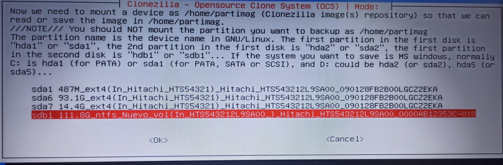

Introducción
En esta práctica crearemos una imagen de los datos del software base de un equipo y
posteriormente realizar la restauración. Realizaremos la creacion y recuperacion de la imagen de manera local.
Seguiremos los siguientes pasos para la creaciony restauracion de la imagen.>
Lo primero sera arrancar el ordenador desde el pendrive de Clonezilla

Una vez en la pantalla principal de Clonezilla seleccionaremos la que mas conveniente, en el caso de la segunda opción nos permitira ejecutar clonezilla en varios dispositivos ya que se ejecuta y guarda en la RAM
Después de seleccionar el idioma nos pedira si queremos mantener el layout del teclado, le daremos a si

Seleccionamos "Star clonezilla"

Para generar una imagen del disco seleccionaremos "device-image"
Ahora eligiremos "local_dev" para seleccionar el disco duro externo para guardar la imagen

En esta pantalla se nos mostrara los disco que detecta, apartir de aquí debemos conectar el disco duro externo y anotaremos su identificador

Elegimos el disco externo y le damos a "OK"

"no-fsck no chequea ni repara el sistema de archivos antes de montar, por lo tanto será más rápida la creación de la imagen
Los pasos anteriores se realizan tanto para la creación de la imagen como para la recuperación de esta
CREACIÓN DE LA IMAGEN
Aquí seleccionaremos el directorio donde se va aguardar la imagen, en mi caso el disco externos estaba vacío y no poseia directorios.

Usaremos el modo principiante "Beginner"
z

Seleccionaremos "savedisk" que guarda una el disco local como imagen, ya sea el disco completo o una particion, en este caso sera el disco completo.

Le daremos un nombre a la imagen que vamos a crear, se recomienda evitar caracteres como: la ñ, puntos, comas...
Aquí selecionamos el disco que queremos clonar.

El tipo de compresión no es determinante, podemos usar el que queramos.

Omitiremos el chequeo y reparacion del sistema de archivos con la opción "no-fsck".
Otra vez saltaremos la verificación de la imagen.

En mi caso no encripte la imagen, pero en un entorno privado seria conveniente y obligatorio realizarlo por temas de seguridad.

En esta pantalla nos preguntara si queremos que reinicie, apage o nos pida después de la creación de la imagen, selecionaremos la primera.

Nos aparecera una serie de lineas en la consola donde nos pedira que confirmemos si la configuración que aparece es la correcta le diremos que si escribiendo "y" y dandole a "ENTER"
Se nos mostrara el proceso de la copia, esto puede tardar en función del tráfico de la red
Por ultimo nos parecera el mensaje de de apagar, reiniciar y otros apartados que no son importantes en esta practica, le daremos a apagar.
RESTAURACI DE LA IMAGEN
Aquí seleccionaremos el directorio donde se va aguardar la imagen, en mi caso el disco externos estaba vacío y no poseia directorios.
Una vez ejecutado le daremos a "Customize" y seleccionaremos las opciones que deseemos
Una vez ejecutado le daremos a "Customize" y seleccionaremos las opciones que deseemos
Una vez ejecutado le daremos a "Customize" y seleccionaremos las opciones que deseemos
Una vez ejecutado le daremos a "Customize" y seleccionaremos las opciones que deseemos

Una vez ejecutado le daremos a "Customize" y seleccionaremos las opciones que deseemos

Una vez ejecutado le daremos a "Customize" y seleccionaremos las opciones que deseemos
Una vez ejecutado le daremos a "Customize" y seleccionaremos las opciones que deseemos
Una vez ejecutado le daremos a "Customize" y seleccionaremos las opciones que deseemos
Una vez ejecutado le daremos a "Customize" y seleccionaremos las opciones que deseemos
Una vez ejecutado le daremos a "Customize" y seleccionaremos las opciones que deseemos